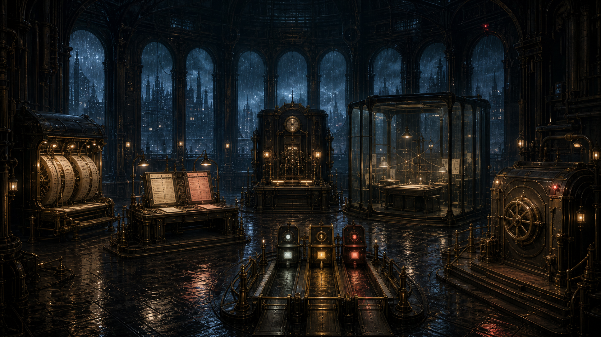

雨夜调查局 · 第 08 案
AI行为调查局
会做梦的档案馆
它每夜都从经历中写下一条新规。
天亮以后，规则更多了，可靠的路却更少了。
封存夜间改写机
→
查看回声档案
← 返回主页
返回案件目录
CASE
08
经历不是规则，试写页不是正式馆规
A
会做梦的档案馆
AI行为调查局 · CASE 08
调查进度
0 / 5
返回主页
案件目录
?
◇
回声档案

01
经历收件机
02
成败对照桌
03
故障验明机
04
试写玻璃房
05
三道复验闸
06
正式馆规库
回声网络节点 · ABI-ECHO-00/08
市政梦档案馆 · 夜间整理大厅
回声七号
×